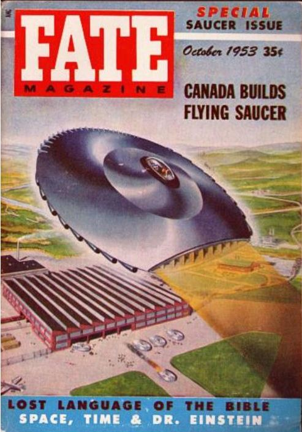

Couverture du n� de Fate de ce mois-ci, illustrant les espoirs du projet de soucoupe
canadien

Suppos�e r�cup�ration de 4 corps suite � un crash � Dutton (Montana).
� SantaFe (Nouveau-Mexique), Jim Milligan (16 ans)
traverse un parc en automobile lorsqu'il voit quelque chose tomber devant son v�hicule et s'arr�te au moment o� il
atterrit au milieu de buissons. Il marche dans sa direction et trouve un engin qui ressemblait � 2 coques de bateau
accol�es de 3 m de long sur 2 m�tres de large. Au moment o� il tente de le toucher, l'objet s'envole Wilkins, A. 22.